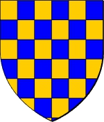

769132328 Rudolf de Warenne
Blev ca 54 år.

Född:
omkring 1020 Varenne, Normandie, France.
Död:
omkring 1074 Varenne, Normandie, France.
Barn:
Personhistoria
1020?
Födelse omkring 1020 Varenne, Normandie, France
1074?
Död omkring 1074 Varenne, Normandie, France